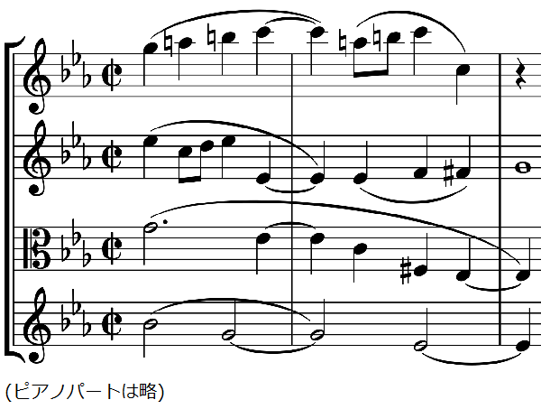

ドホナーニ: ピアノ五重奏曲第2番
エルンスト・ドホナーニといえば、ホロヴィッツが若い頃録音した『カプリッチョ』（演奏会用練習曲第6番）やヨハン・シュトラウス2世のワルツのピアノ編曲がまず思い起こされる。これら、特に前者は、典型的なショウ・ピースであって、その手の愛好家ならこの2、3分の短い曲だけで1時間は語れるというような、いにしえの大ピアニスト達に愛好された曲である。それもそのはず、ドホナーニは若い頃から他でもないヴィルトゥオーソピアニストとして評判を取っていた。そして同時に作曲家としても優れていたといわれる。その割に、上記のような小品を除けば、かつては『ピアノと管弦楽のための童謡による変奏曲』くらいしか接する機会がなく、ほぼ同世代でやや年下のバルトークやコダーイに比べると（そのスタイルの違いもあってか）取り上げられることが極端に少なかったように思う。それが変われば変わるもので、今では多くの作品を録音で実際に聴いて確かめることができるようになった。
『ピアノ五重奏曲』は2曲が残されており、堂々たる『第1番』（作品1）よりも少し規模が小さく三楽章構成を取る『第2番』はベルリン高等音楽院で教えていた時期、1914年の作品。前回のコルンゴルトのソナタとほぼ同じく第一次大戦前夜の作ということになる。
配信で見つけただけでも10種類近くの録音があり、その全部を聴いたわけではないが、感心させられるものが少なくない。例えば ASV の Roscoe / Vanbrugh Q. 、Naxos の Enso Q. / Wallisch、Solo Musica の Ensemble Raro、Hyperion の Hamelin / Takács Q. など。そして、つい最近出た下のアルバムもそれらをさらに上回って印象的だった。第1楽章の重々しく陰鬱な感じ、第3楽章で再びそれが燃え上がりやがて浄化されるように終わる構成の素晴らしさ。さらには、"Intermezzo"などと控え目な副題と蠱惑的なテーマを持っている第2楽章は、両端楽章の単なる間奏ではなく、第1楽章副主題の美しい再現や、ロマ音楽風の活力など、暗色系の作品全体に差し色を加える重要な役割を持っていると思うが、そういった作品の特徴を非常に良く描き出す熱い演奏であった。
Ernst v. Dohnányi: Piano Quintet No. 2
in E-Flat Minor, Op. 26
Paolo Giacometti (pf)
Zemlinsky Quartet
(2023)
ところで、終楽章において第1楽章の第1主題が回帰し、しばらくして長調に転調して最高潮を迎え、後には静穏なコーダを残すのみとなるあたり、一瞬で通り過ぎる箇所だとはいえ、知らないで聴くと音を取り損なったのではないかと思われかねない和声の衝突がある（下譜例）。他にも似たような箇所はあるが、ここは全曲が最後に静かに落ち着く直前なので特に目立つ。

いろいろな演奏でここを聴き比べると、Takács Q. のようになぜか全く普通に聴こえるものから、文字通り不協和に聴こえるものまでさまざまである。Takács Q. の演奏はしかし第2楽章のコントラストがあまり強くなくどちらかというと安全運転で、全体としてはちょっと物足りない面もあった。
Ernst v. Dohnányi: Piano Quintet No. 2
in E-Flat Minor, Op. 26
Marc-André Hamelin (pf)
Takács Quartet
(2018)
(Jun. 29, 2024)